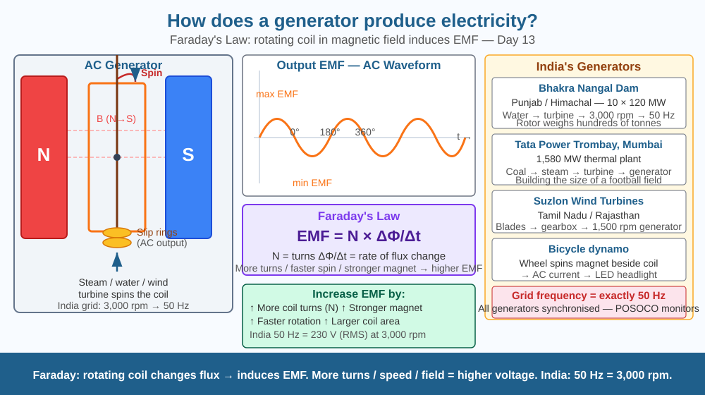

Discover how mechanical motion becomes electricity — and understand why this single principle powers every hydroelectric dam, thermal plant, and wind turbine in India.
India's electricity mostly comes from coal — burned to boil water, which makes steam, which spins a turbine, which spins a generator. But the generator is the final step and the most mysterious: a spinning thing produces electricity. No chemical reaction, no battery, no solar cells. Just rotation and magnets — and somehow, electricity flows. A Tata Power station in Mumbai can generate 1,000 MW from generators. How does spinning create current?
Faraday's Law of Electromagnetic Induction:
When a conductor moves through a magnetic field (or a magnetic field changes around a conductor), an electromotive force (EMF) is induced in the conductor:
EMF = −N × ΔΦ/Δt
Where N = number of turns in the coil, ΔΦ/Δt = rate of change of magnetic flux.
Key insight: It is the change in magnetic flux that matters — not the field itself. A stationary conductor in a steady field produces no current.
How a generator works:
AC vs DC:
Factors affecting output voltage:
Fleming's Right-Hand Rule:
For generators: index finger = magnetic field direction, thumb = motion direction of conductor, middle finger = induced current direction.
Imagine walking through a turnstile — as you push through, the gate sweeps through space and its edges cut through imaginary lines in space (magnetic field lines). Every time an edge cuts through a line, a tiny current is pushed along. The faster you spin the turnstile (coil), the more lines it cuts per second, the more current is produced. Stop spinning — no lines cut — no current. Spin backwards — current reverses. This is why generators produce AC: one half-spin cuts in one direction, the other half reverses.

The diagram shows a generator cross-section: a rectangular coil rotating between N and S poles of a magnet, connected via slip rings (for AC) to an external circuit. The coil is shown at four positions (0°, 90°, 180°, 270°) with the corresponding EMF shown on an AC waveform graph below. Labels show: maximum EMF at 90° and 270° (coil sides cutting most field lines), zero EMF at 0° and 180° (coil parallel to field). A sidebar compares: thermal plant turbine, hydro turbine, wind turbine — all spin the same type of generator.
Hold a strong bar magnet and push it quickly into and out of a coil of wire (50–100 turns) connected to a sensitive galvanometer or LED. When you push the magnet IN, the LED lights up momentarily. Pull it OUT — LED lights in the opposite direction (or flickers if it's AC-sensitive). Push slowly — less brightness (lower EMF). Push fast — brighter (higher EMF). You are directly demonstrating Faraday's Law: changing flux = induced EMF.
India's grid frequency must be maintained at exactly 50 Hz. If too many appliances switch on simultaneously, the grid slows below 50 Hz. If too few loads are connected, it speeds above 50 Hz. Grid operators at POSOCO (Power System Operation Corporation) monitor frequency in real time and start or stop generators to maintain exactly 50 Hz — because every generator in India is physically spinning in synchrony. A 1 Hz deviation means every generator in the country has drifted from its designed 3,000 rpm. How does this constrain the design of power systems?
What is the basic mechanism by which a generator produces electricity?
Why is understanding electromagnetic induction more useful than knowing generators make electricity?
If a generator's coil spun twice as fast, what would you predict about the output?
A generator coil has 200 turns, area 0.05 m², rotating at 50 rev/s in a magnetic field of 0.4 T. (a) Calculate the maximum EMF using EMF_max = NBAω, where ω = 2π × frequency. (b) What is the RMS (effective) voltage? (RMS = max EMF / √2.) (c) What frequency does this generator produce? (d) How many rpm must the coil spin at to produce 60 Hz (US frequency) instead of 50 Hz (India frequency)?
The world's first practical generator was built by Michael Faraday in 1831 using a copper disc rotating between the poles of a horseshoe magnet. It produced a tiny DC current — but the principle was proved. Today, a single generator at the Sardar Sarovar Dam can produce 200 MW — enough to power 200,000 Indian homes — using the exact same physics Faraday discovered in a basement in London in 1831. The modern generator coil is a supercooled copper winding the size of a bus, rotating inside a magnetic field strong enough to lift a car.
Faraday's Law: a rotating coil in a magnetic field induces an EMF. More turns, stronger field, faster rotation → higher voltage. Generators produce AC naturally — one full rotation = one AC cycle. India's grid: 50 Hz = 3,000 rpm.